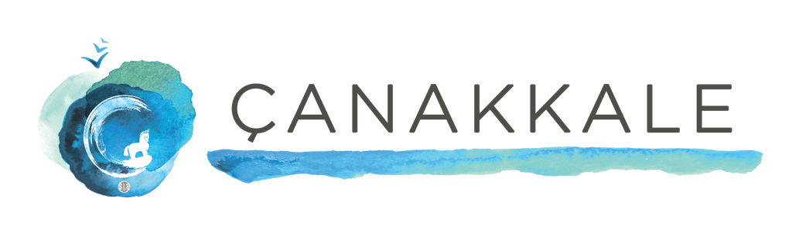

<div class="pages">
  <div data-page="features" class="page no-toolbar no-navbar">
    <div class="page-content">
    
	<div class="navbarpages navbarpagesbg">
		<div class="navbar_left">
		   <div class="logo_image"><a href="index.html" ></a></div>
		</div>			
		<a href="#" data-panel="left" class="open-panel">
			<div class="navbar_right"></div>
		</a>					
	</div>
     
     <div id="pages_maincontent">
          
          <h2 class="page_title">HİZMETLER</h2>
                 
          <div class="page_single layout_fullwidth_padding">     
              <a href="javascript:;" class="button_full btyellow" >Türk Hamamı Ritüelleri</a>

              <ul class="simple_list">
                    <li>40 DK -  95 TL Türk Hamamı Kese & Köpük</li>
                    <li>60 DK - 160 TL Türk Hamamında Lüks Bakım</li>
              </ul>

              <a href="javascript:;" class="button_full btyellow" >Bölgesel Masajlar</a>

              <ul class="simple_list">
                    <li>20 DK -  80 TL Sırt Masajı</li>
                    <li>30 DK - 100 TL Baş ve Boyun Masajı</li>
                    <li>40 DK - 120 TL Bacak Masajı</li>
              </ul>

              <a href="javascript:;" class="button_full btyellow" >Spa Klasik Bakımlar</a>

              <ul class="simple_list">
                    <li>60 DK - 200 TL Kolin Spa Masajı</li>
                    <li>60 DK - 160 TL İsveç Masajı</li>
                    <li>50 DK - 180 TL Aroma Terapi Masajı</li>
                    <li>50 DK - 190 TL Bali Masajı</li>
                    <li>50 DK - 195 TL Thai Masajı</li>
                    <li>50 DK - 195 TL Sıcak Taş Masajı</li>
              </ul>

              <blockquote class="btyellow" >Preforum Çanakkale katılımcılarına özel %25 indirim uygulanacaktır.</blockquote>
          </div>
     </div>
      
      
    </div>
  </div>
</div>